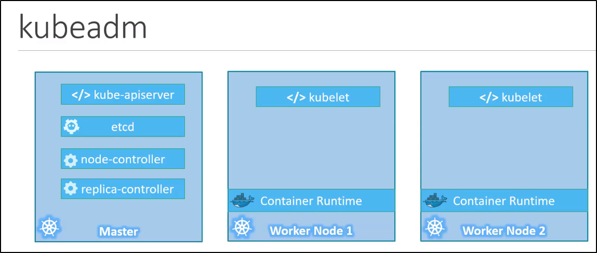

Kubernetes Setup - Kubeadm
Kubernetes è formato da differenti components.
Modificare i config file e certificati è una palla, ammettiamolo.
Kubeadm si prende cura di fare questi task!

Step per installare Kubeadm:
1) Avere differenti nodi o VM per settare il cluster.
2) Settare un nodo come Master e gli altri come Worker Nodes.
3) Installare un Container Runtime sugli host (E.G. Docker)
4) Installare Kubeadm su ogni nodo.
5) Initialize il Master Node. Questo installa tutte le components sul Master Node.
6) Per la connessione dei nodi, non basta quella normale. Va configurata una rete chiamata "POD Network".
7) Ultimo step è di far joinare i Worked Node sotto nome del Master Node.